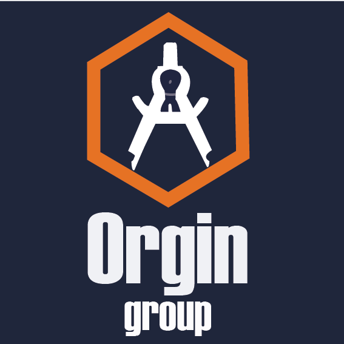

<!-- Upper Navbar -->
<nav class="navbar navbar-expand-lg fixed-top upper-navbar">
  <div class="container-fluid">
    
    <!-- Brand Logo -->
    <a class="navbar-brand" routerLink="/">
      
    </a>

    <!-- Center Menu Icon (visible only on small screens) -->
    <div class="center-menu-icon d-lg-none" *ngIf="!centerMenuOpen">
      <button class="btn center-menu-btn" (click)="toggleCenterMenu($event)">
        <i class="fas fa-bars"></i>
      </button>
    </div>

    <!-- Center Menu Options (visible only on small screens when menu is open) -->
    <div class="center-menu-options d-lg-none" *ngIf="centerMenuOpen">
      <ul class="navbar-nav">
        <li class="nav-item">
          <a class="nav-link" [routerLink]="'/'" routerLinkActive="active-link" [routerLinkActiveOptions]="{exact: true}" (click)="closeCenterMenu()">Business Projects</a> 
        </li>   
        <li class="nav-item">
          <a class="nav-link" [routerLink]="'/community-projects'" routerLinkActive="active-link" (click)="closeCenterMenu()">Community Projects</a>
        </li>    
        <li class="nav-item">
          <a class="nav-link disabled-link" style="pointer-events: none; opacity: 0.6; cursor: not-allowed;">I2V Program</a>
        </li>
      </ul>
    </div>

    <!-- Right-side Actions -->
    <div class="nav-actions d-flex align-items-center">
      
      <!-- Theme Switcher -->
      <button (click)="toggleTheme()" class="btn theme-toggle">
        {{ isDarkMode ? '☀️' : '🌙' }}
      </button>

      <!-- Language Selector -->
      <select class="form-select lang-select" (change)="changeLanguage($event)" [ngModel]="currentLanguage">
        <option value="en">EN</option>
        <option value="fr">FR</option>
        <option value="rw">RW</option>
      </select>

      <!-- Login | Signup -->
      <a [href]="clientUrl" target="_blank" class="btn login-btn">{{ 'ACCOUNT' | translate }}</a>
      
    </div>
  </div>
</nav>

<!-- Lower Navbar (hidden on small screens) -->
<nav class="navbar navbar-expand-lg fixed-top lower-navbar d-none d-lg-block">
  <div class="container-fluid">
    
    <!-- Left Navigation Link -->
    <div class="nav-item-left">
      <a class="nav-link" [routerLink]="'/'" routerLinkActive="active-link" [routerLinkActiveOptions]="{exact: true}">Business Projects</a>
    </div>

    <!-- Center Navigation Link -->
    <div class="nav-item-center">
      <a class="nav-link" [routerLink]="'/community-projects'" routerLinkActive="active-link">Community Projects</a>
    </div>

    <!-- Right Navigation Link -->
    <div class="nav-item-right">
      <a class="nav-link disabled-link" style="pointer-events: none; opacity: 0.6; cursor: not-allowed;">I2V Program</a>
    </div>

    <!-- Mobile Menu Button -->
    <button class="navbar-toggler mobile-menu-btn" type="button" (click)="toggleMenu($event)">
      <span class="navbar-toggler-icon"></span>
    </button>

    <!-- Mobile Menu -->
    <div class="mobile-menu" [ngClass]="{ 'show': menuOpen }">
      <ul class="navbar-nav">
        <li class="nav-item">
          <a class="nav-link" [routerLink]="'/'" routerLinkActive="active-link" [routerLinkActiveOptions]="{exact: true}">Business Projects</a> 
        </li>   
        <li class="nav-item">
          <a class="nav-link" [routerLink]="'/community-projects'" routerLinkActive="active-link">Community Projects</a>
        </li>    
        <li class="nav-item">
          <a class="nav-link disabled-link" style="pointer-events: none; opacity: 0.6; cursor: not-allowed;">I2V Program</a>
        </li>
      </ul>
    </div>
  </div>
</nav>


